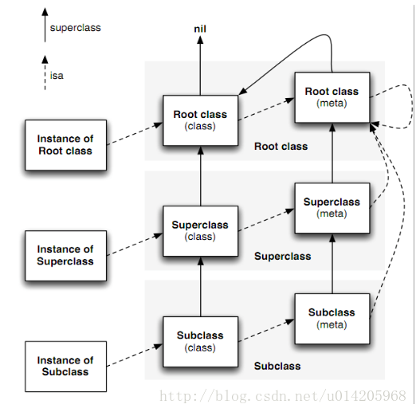
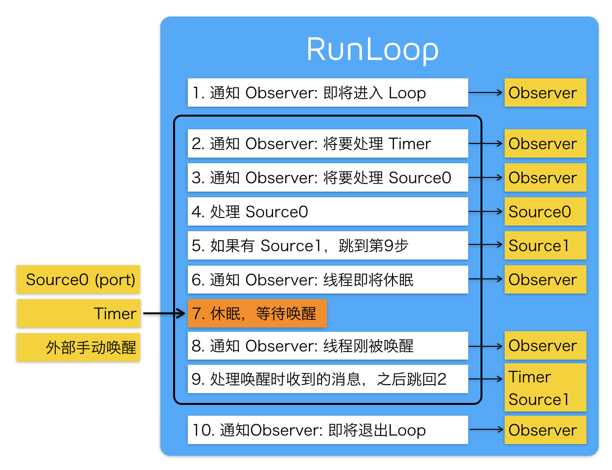
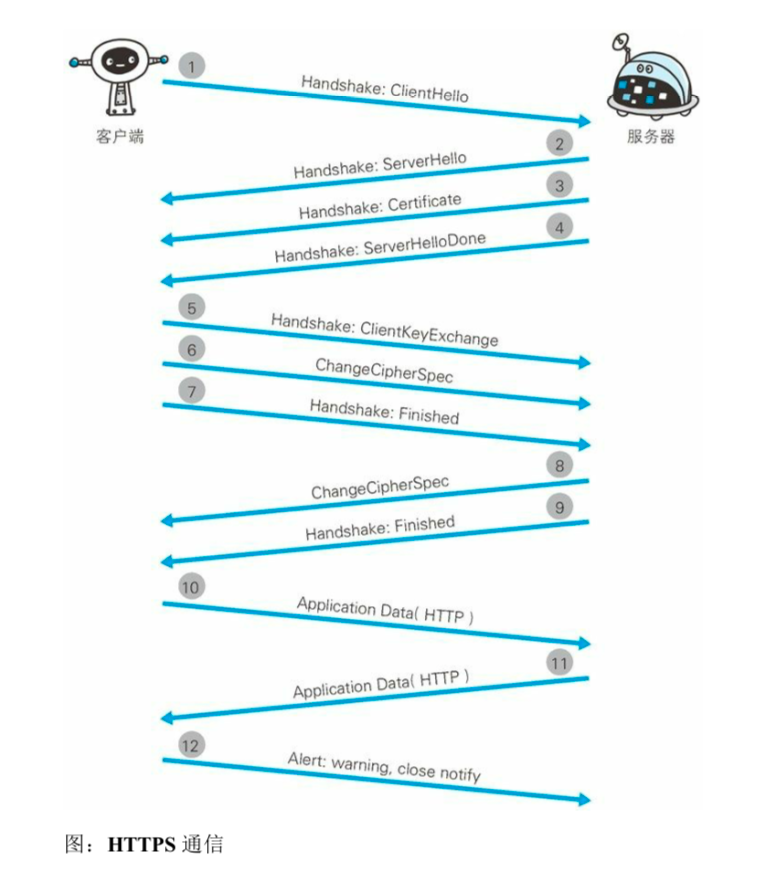
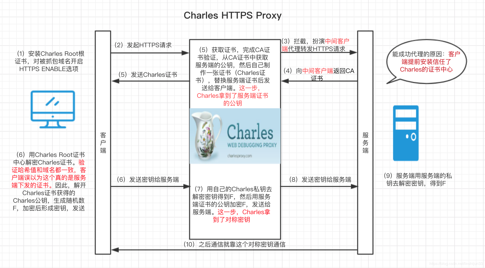

最近准备复习一下面试题，看到了J_Knight_在18年的出一套 iOS 高级面试题尝试着回答一下题目，由于水平有限，如有错误的地方，请大家多多指教。
目录
iOS 基础题
1. 分类和扩展有什么区别？可以分别用来做什么？分类有哪些局限性？分类的结构体里面有哪些成员？
2.讲一下atomic的实现机制；为什么不能保证绝对的线程安全（最好可以结合场景来说）？
3. 被weak修饰的对象在被释放的时候会发生什么？是如何实现的？知道sideTable么？里面的结构可以画出来么？
4. 关联对象有什么应用，系统如何管理关联对象？其被释放的时候需要手动将所有的关联对象的指针置空么？
5. KVO的底层实现？如何取消系统默认的KVO并手动触发（给KVO的触发设定条件：改变的值符合某个条件时再触发KVO）？
6. Autoreleasepool所使用的数据结构是什么？AutoreleasePoolPage结构体了解么？
7. 讲一下对象，类对象，元类，跟元类结构体的组成以及他们是如何相关联的？为什么对象方法没有保存的对象结构体里，而是保存在类对象的结构体里？
9. iOS中内省的几个方法？class方法和objc_getClass方法有什么区别?
10. 在运行时创建类的方法objc_allocateClassPair的方法名尾部为什么是pair（成对的意思）？
12. 为什么在block外部使用__weak修饰的同时需要在内部使用__strong修饰？
13. RunLoop的作用是什么？它的内部工作机制了解么？（最好结合线程和内存管理来说）
iOS实战题
16. 反射是什么？可以举出几个应用场景么？（知道多少说多少）
17. 有哪些场景是NSOperation比GCD更容易实现的？（或是NSOperation优于GCD的几点，知道多少说多少）
18. App 启动优化策略？最好结合启动流程来说（main()函数的执行前后都分别说一下，知道多少说多少）
19. App 无痕埋点的思路了解么？你认为理想的无痕埋点系统应该具备哪些特点？（知道多少说多少）
20. 你知道有哪些情况会导致app崩溃，分别可以用什么方法拦截并化解？（知道多少说多少）
21. 你知道有哪些情况会导致app卡顿，分别可以用什么方法来避免？（知道多少说多少）
网络题
25. HTTPS的握手流程？为什么密钥的传递需要使用非对称加密？双向认证了解么？
27. 如何用Charles抓HTTPS的包？其中原理和流程是什么？
计算机系统题
37. 有哪几种锁？各自的原理？它们之间的区别是什么？最好可以结合使用场景来说
设计模式题和架构 & 设计题（由于水平有限，就不误人子弟了）
数据结构&算法题
38. 链表和数组的区别是什么？插入和查询的时间复杂度分别是多少？
40. 排序题：冒泡排序，选择排序，插入排序，快速排序（二路，三路）能写出那些？
41. 链表题：如何检测链表中是否有环？如何删除链表中等于某个值的所有节点？
42. 数组题：如何在有序数组中找出和等于给定值的两个元素？如何合并两个有序的数组之后保持有序？
43. 二叉树题：如何反转二叉树？如何验证两个二叉树是完全相等的？
1.分类和扩展有什么区别？可以分别用来做什么？分类有哪些局限性？分类的结构体里面有哪些成员？
- 分类主要用来为某个类添加方法，属性，协议（我一般用来为系统的类扩展方法或者把某个复杂的类的按照功能拆到不同的文件里）
- 扩展主要用来为某个类原来没有的成员变量、属性、方法。注：方法只是声明（我一般用扩展来声明私有属性，或者把.h的只读属性重写成可读写的）
分类和扩展的区别：
- 分类是在运行时把分类信息合并到类信息中，而扩展是在编译时，就把信息合并到类中的
- 分类声明的属性，只会生成getter/setter方法的声明，不会自动生成成员变量和getter/setter方法的实现，而扩展会
- 分类不可用为类添加实例变量，而扩展可以
- 分类可以为类添加方法的实现，而扩展只能声明方法，而不能实现
分类的局限性：
- 无法为类添加实例变量，但可通过关联对象进行实现，注：关联对象中内存管理没有weak，用时需要注意野指针的问题，可通过其他办法来实现，具体可参考iOS weak 关键字漫谈
- 分类的方法若和类中原本的实现重名，会覆盖原本方法的实现，注：并不是真正的覆盖
- 多个分类的方法重名，会调用最后编译的那个分类的实现
分类的结构体里有哪些成员
struct category_t {
const char *name; //名字
classref_t cls; //类的引用
struct method_list_t *instanceMethods;//实例方法列表
struct method_list_t *classMethods;//类方法列表
struct protocol_list_t *protocols;//协议列表
struct property_list_t *instanceProperties;//实例属性列表
// 此属性不一定真正的存在
struct property_list_t *_classProperties;//类属性列表
};
2.讲一下atomic的实现机制；为什么不能保证绝对的线程安全（最好可以结合场景来说）？
- atomic的实现机制
atomic是property的修饰词之一，表示是原子性的，使用方式为@property(atomic)int age;,此时编译器会自动生成getter/setter方法，最终会调用objc_getProperty和objc_setProperty方法来进行存取属性。若此时属性用atomic修饰的话，在这两个方法内部使用os_unfair_lock来进行加锁，来保证读写的原子性。锁都在PropertyLocks中保存着（在iOS平台会初始化8个，mac平台64个），在用之前，会把锁都初始化好，在需要用到时，用对象的地址加上成员变量的偏移量为key，去PropertyLocks中去取。因此存取时用的是同一个锁，所以atomic能保证属性的存取时是线程安全的。注：由于锁是有限的，不用对象，不同属性的读取用的也可能是同一个锁 - atomic为什么不能保证绝对的线程安全？
- atomic在getter/setter方法中加锁，仅保证了存取时的线程安全，假设我们的属性是
@property(atomic)NSMutableArray *array;可变的容器时,无法保证对容器的修改是线程安全的 - 在编译器自动生产的getter/setter方法，最终会调用
objc_getProperty和objc_setProperty方法存取属性，在此方法内部保证了读写时的线程安全的，当我们重写getter/setter方法时，就只能依靠自己在getter/setter中保证线程安全
- atomic在getter/setter方法中加锁，仅保证了存取时的线程安全，假设我们的属性是
3. 被weak修饰的对象在被释放的时候会发生什么？是如何实现的？知道sideTable么？里面的结构可以画出来么？
-
被weak修饰的对象在被释放的时候会发生什么？
被weak修饰的对象在被释放的时候，会把weak指针自动置位nil -
weak是如何实现的？
runTime会把对weak修饰的对象放到一个全局的哈希表中，用weak修饰的对象的内存地址为key，weak指针为值，在对象进行销毁时，用通过自身地址去哈希表中查找到所有指向此对象的weak指针，并把所有的weak指针置位nil -
sideTable的结构
struct SideTable {
spinlock_t slock;//操作SideTable时用到的锁
RefcountMap refcnts;//引用计数器的值
weak_table_t weak_table;//存放weak指针的哈希表
};
4. 关联对象有什么应用，系统如何管理关联对象？其被释放的时候需要手动将所有的关联对象的指针置空么？
- 关联对象有什么应用？ 一般用于在分类中给类添加实例变量
- 系统如何管理关联对象？
首先系统中有一个全局AssociationsManager,里面有个AssociationsHashMap哈希表，哈希表中的key是对象的内存地址，value是ObjectAssociationMap,也是一个哈希表，其中key是我们设置关联对象所设置的key，value是ObjcAssociation,里面存放着关联对象设置的值和内存管理的策略。 已void objc_setAssociatedObject(id object, const void * key,id value, objc_AssociationPolicy policy)为例，首先会通过AssociationsManager获取AssociationsHashMap，然后以object的内存地址为key，从AssociationsHashMap中取出ObjectAssociationMap，若没有，则新创建一个ObjectAssociationMap，然后通过key获取旧值，以及通过key和policy生成新值ObjcAssociation(policy, new_value)，把新值存放到ObjectAssociationMap中，若新值不为nil，并且内存管理策略为retain，则会对新值进行一次retain，若新值为nil，则会删除旧值，若旧值不为空并且内存管理的策略是retain，则对旧值进行一次release - 其被释放的时候需要手动将所有的关联对象的指针置空么？
注：对这个问题我的理解是：当对象被释放时，需要手动移除该对象所设置的关联对象吗？
不需要，因为在对象的dealloc中，若发现对象有关联对象时，会调用
_object_remove_assocations方法来移除所有的关联对象，并根据内存策略，来判断是否需要对关联对象的值进行release
5. KVO的底层实现？如何取消系统默认的KVO并手动触发（给KVO的触发设定条件：改变的值符合某个条件时再触发KVO）？
-
KVO的底层实现？
-
当某个类的属性被观察时，系统会在运行时动态的创建一个该类的子类。并且把改对象的isa指向这个子类
-
假设被观察的属性名是
name，若父类里有setName:或这_setName:,那么在子类里重写这2个方法，若2个方法同时存在，则只会重写setName:一个（这里和KVCset时的搜索顺序是一样的） -
若被观察的类型是NSString,那么重写的方法的实现会指向
_NSSetObjectValueAndNotify这个函数，若是Bool类型，那么重写的方法的实现会指向_NSSetBoolValueAndNotify这个函数，这个函数里会调用willChangeValueForKey:和didChangevlueForKey:,并且会在这2个方法调用之间，调用父类set方法的实现 -
系统会在
willChangeValueForKey:对observe里的change[old]赋值，取值是用valueForKey:取值的,didChangevlueForKey:对observe里的change[new]赋值，然后调用observe的这个方法- (void)observeValueForKeyPath:(nullable NSString *)keyPath ofObject:(nullable id)object change:(nullable NSDictionary<NSKeyValueChangeKey, id> *)change context:(nullable void *)context; -
当使用KVC赋值的时候,在NSObject里的
setValue:forKey:方法里,若父类不存在setName:或这_setName:这些方法,会调用_NSSetValueAndNotifyForKeyInIvar这个函数，这个函数里同样也会调用willChangeValueForKey:和didChangevlueForKey:,若存在则调用
-
-
如何取消系统默认的KVO并手动触发（给KVO的触发设定条件：改变的值符合某个条件时再触发KVO）？
举例：取消Person类age属性的默认KVO，设置age大于18时，手动触发KVO
+ (BOOL)automaticallyNotifiesObserversForKey:(NSString *)key {
if ([key isEqualToString:@"age"]) {
return NO;
}
return [super automaticallyNotifiesObserversForKey:key];
}
- (void)setAge:(NSInteger)age {
if (age > 18 ) {
[self willChangeValueForKey:@"age"];
_age = age;
[self didChangeValueForKey:@"age"];
}else {
_age = age;
}
}
6. Autoreleasepool所使用的数据结构是什么？AutoreleasePoolPage结构体了解么？
Autoreleasepool是由多个AutoreleasePoolPage以双向链表的形式连接起来的， Autoreleasepool的基本原理：在每个自动释放池创建的时候，会在当前的AutoreleasePoolPage中设置一个标记位，在此期间，当有对象调用autorelsease时，会把对象添加到AutoreleasePoolPage中，若当前页添加满了，会初始化一个新页，然后用双向量表链接起来，并把新初始化的这一页设置为hotPage,当自动释放池pop时，从最下面依次往上pop，调用每个对象的release方法，直到遇到标志位。 AutoreleasePoolPage结构如下
class AutoreleasePoolPage {
magic_t const magic;
id *next;//下一个存放autorelease对象的地址
pthread_t const thread; //AutoreleasePoolPage 所在的线程
AutoreleasePoolPage * const parent;//父节点
AutoreleasePoolPage *child;//子节点
uint32_t const depth;//深度,也可以理解为当前page在链表中的位置
uint32_t hiwat;
}
7. 讲一下对象，类对象，元类，跟元类结构体的组成以及他们是如何相关联的？为什么对象方法没有保存的对象结构体里，而是保存在类对象的结构体里？
- 讲一下对象，类对象，元类，跟元类结构体的组成以及他们是如何相关联的？
对象的结构体里存放着isa和成员变量，isa指向类对象。 类对象的isa指向元类，元类的isa指向NSObject的元类。 类对象和元类的结构体有isa、superclass、cache、bits，bits里存放着class_rw_t的指针。 放一张经典的图
- 为什么对象方法没有保存的对象结构体里，而是保存在类对象的结构体里？
方法是每个对象互相可以共用的，如果每个对象都存储一份方法列表太浪费内存，由于对象的isa是指向类对象的，当调用的时候，直接去类对象中查找就行了。可以节约很多内存空间的
8. class_ro_t和class_rw_t的区别？
class_rw_t提供了运行时对类拓展的能力，而class_ro_t存储的大多是类在编译时就已经确定的信息。二者都存有类的方法、属性（成员变量）、协议等信息，不过存储它们的列表实现方式不同。简单的说class_rw_t存储列表使用的二维数组，class_ro_t使用的一维数组。 class_ro_t存储于class_rw_t结构体中，是不可改变的。保存着类的在编译时就已经确定的信息。而运行时修改类的方法，属性，协议等都存储于class_rw_t中
9. iOS中内省的几个方法？class方法和objc_getClass方法有什么区别?
- 什么是内省？
在计算机科学中，内省是指计算机程序在运行时（Run time）检查对象（Object）类型的一种能力，通常也可以称作运行时类型检查。 不应该将内省和反射混淆。相对于内省，反射更进一步，是指计算机程序在运行时（Run time）可以访问、检测和修改它本身状态或行为的一种能力。
-
iOS中内省的几个方法？
- isMemberOfClass //对象是否是某个类型的对象
- isKindOfClass //对象是否是某个类型或某个类型子类的对象
- isSubclassOfClass //某个类对象是否是另一个类型的子类
- isAncestorOfObject //某个类对象是否是另一个类型的父类
- respondsToSelector //是否能响应某个方法
- conformsToProtocol //是否遵循某个协议
-
class方法和object_getClass方法有什么区别?
实例class方法就直接返回object_getClass(self),类class方法直接返回self，而object_getClass(类对象)，则返回的是元类
10. 在运行时创建类的方法objc_allocateClassPair的方法名尾部为什么是pair（成对的意思）？
因为此方法会创建一个类对象以及元类，正好组成一队
Class objc_allocateClassPair(Class superclass, const char *name,
size_t extraBytes){
...省略了部分代码
//生成一个类对象
cls = alloc_class_for_subclass(superclass, extraBytes);
//生成一个类对象元类对象
meta = alloc_class_for_subclass(superclass, extraBytes);
objc_initializeClassPair_internal(superclass, name, cls, meta);
return cls;
}
11. 一个int变量被__block修饰与否的区别？
int变量被__block修饰之后会被包装成一个对象,如__block int age会被包装成下面这样
struct __Block_byref_age_0 {
void *__isa;
__Block_byref_age_0 *__forwarding; //指向自己
int __flags;
int __size;
int age;//包装的具体的值
};
// age = 20;会被编译成下面这样
(age.__forwarding->age) = 20;
12. 为什么在block外部使用__weak修饰的同时需要在内部使用__strong修饰？
用__weak修饰之后block不会对该对象进行retain，只是持有了weak指针，在block执行之前或执行的过程时，随时都有可能被释放，将weak指针置位nil，产生一些未知的错误。在内部用__strong修饰，会在block执行时，对该对象进行一次retain，保证在执行时若该指针不指向nil，则在执行过程中不会指向nil。但有可能在执行执行之前已经为nil了
13. RunLoop的作用是什么？它的内部工作机制了解么？（最好结合线程和内存管理来说）
- 什么是RunLoop 一般来讲，一个线程一次只能执行一个任务，执行完成后线程就会退出。如果我们需要一个机制，让线程能随时处理事件但并不退出。这种模型通常被称作 Event Loop。 Event Loop 在很多系统和框架里都有实现，比如 Node.js 的事件处理，比如 Windows 程序的消息循环，再比如 OSX/iOS 里的 RunLoop。实现这种模型的关键点在于：如何管理事件/消息，如何让线程在没有处理消息时休眠以避免资源占用、在有消息到来时立刻被唤醒。
- RunLoop的作用是什么？（由于水平有限，不是很理解作者的本意，我对题目的理解是，利用RunLoop可以做哪些事情？）
- 保持程序的持续运行，在iOS线程中，会在main方法给主线程创建一个RunLoop，保证主线程不被销毁
- 处理APP中的各种事件（如touch，timer，performSelector等）
- 界面更新
- 手势识别
- AutoreleasePool
- 系统在主线程RunLoop注册了2个observer
- 第一个observe监听即将进入RunLoop，调用_objc_autoreleasePoolPush()创建自动释放池
- 第二个observe监听两个事件，进入休眠之前和即将退出RunLoop
- 在进入休眠之前的回调里，会先释放自动释放池，然后在创建一个自动释放池
- 在即将退出的回调里，会释放自动释放池
- 线程保活
- 监测卡顿
- RunLoop的内部逻辑（下图来自于YY大神的博客）

14. 哪些场景可以触发离屏渲染？（知道多少说多少）
- 添加遮罩mask
- 添加阴影shadow
- 设置圆角并且设置masksToBounds为true
- 设置allowsGroupOpacity为true并且layer.opacity小于1.0和有子layer或者背景不为空
- 开启光栅化shouldRasterize=true
15.AppDelegate如何瘦身？
- AppDelegate为什么会那么臃肿？ AppDelegate是一个项目的入口，承担了太多的功能，如初始化根控制器，管理应用的状态，管理推送，和其他APP交互，初始化第三方SDK，获取权限等等
- 如何瘦身 瘦身的方案有很多，比如说把某些方法放到swift扩展或者OC的分类中，抽取中间类，利用通知监听等等，不过我比较喜欢的是使用命令设计模式进行瘦身。 命令模式是描述对象被称作命令相当于是一个简单的方法或者事件。因为对象封装了触发自身所需的所有参数，因此命令的调用者不知道该命令做了什么以及响应者是谁 可以为APPdelegate的每一个职责定义一个命令，这个命令的名字有他们自己指定
protocol Command {
func execute()
}
struct InitializeThirdPartiesCommand: Command {
func execute() {
// 初始化第三方库
}
}
struct InitialViewControllerCommand: Command {
let keyWindow: UIWindow
func execute() {
// 设置根控制器
keyWindow.rootViewController = UIViewController()
}
}
struct RegisterToRemoteNotificationsCommand: Command {
func execute() {
// 注册远程推送
}
}
然后我们定义StartupCommandsBuilder来封装如何创建命令的详细信息。APPdelegate调用这个builder去初始化命令并执行这些命令
// MARK: - Builder
final class StartupCommandsBuilder {
private var window: UIWindow!
func setKeyWindow(_ window: UIWindow) -> StartupCommandsBuilder {
self.window = window
return self
}
func build() -> [Command] {
return [
InitializeThirdPartiesCommand(),
InitialViewControllerCommand(keyWindow: window),
RegisterToRemoteNotificationsCommand()
]
}
}
// MARK: - App Delegate
@UIApplicationMain
class AppDelegate: UIResponder, UIApplicationDelegate {
var window: UIWindow?
func application(_ application: UIApplication, didFinishLaunchingWithOptions launchOptions: [UIApplicationLaunchOptionsKey: Any]?) -> Bool {
StartupCommandsBuilder()
.setKeyWindow(window!)
.build()
.forEach { $0.execute() }
return true
}
}
如果APPdelegate需要添加新的职责，则可以创建新的命令，然后把命令添加到builder里去而无需去改变APPdelegate。而且使用命令模式有以下好处
- 每个命令都有单一的职责
- 无需更改APPdelegate就可以很容易的添加新的命令
- 每个命令可以很容易的被单独测试
16. 反射是什么？可以举出几个应用场景么？（知道多少说多少）
- 什么是反射
反射是指计算机程序在运行时（runtime）可以访问、检测和修改它本身状态或行为的一种能力。用比喻来说，反射就是程序在运行的时候能够“观察”并且修改自己的行为。
在OC中，反射是指程序在运行时，获取和修改类的信息。 2. 应用场景
- JSON与模型之间的相互转换
- Method Swizzling
- KVO的实现原理
- 实现NSCoding的自动归档和自动解档
- 探索系统某些类的具体实现
17. 有哪些场景是NSOperation比GCD更容易实现的？（或是NSOperation优于GCD的几点，知道多少说多少）
- NSOperation可以设置依赖
- NSOperation可以进行暂停，继续等操作
- NSOperation可以监测当前队列运行的状态
- NSOperationQueue可以取消队列里的所有操作
- NSOperationQueue很方便的设置最大并发数
18. App启动优化策略？最好结合启动流程来说（main()函数的执行前后都分别说一下，知道多少说多少）
- iOS的启动流程
- 根据 info.plist 里的设置加载闪屏，建立沙箱，对权限进行检查等
- 加载可执行文件
- 加载动态链接库，进行 rebase 指针调整和 bind 符号绑定
- Objc 运行时的初始处理，包括 Objc 相关类的注册、category 注册、selector 唯一性检查等；
- 初始化，包括了执行 +load() 方法、attribute((constructor)) 修饰的函数的调用、创建 C++ 静态全局变量。
- 执行 main 函数
- Application 初始化，到 applicationDidFinishLaunchingWithOptions 执行完
- 初始化帧渲染，到 viewDidAppear 执行完，用户可见可操作。
- 启动优化
- 减少动态库的加载
- 去除掉无用的类和C++全局变量的数量
- 尽量让load方法中的内容放到首屏渲染之后再去执行，或者使用initialize替换
- 去除在首屏展现之前非必要的功能
- 检查首屏展现之前主线程的耗时方法，将没必要的耗时方法滞后或者延迟执行
19. App无痕埋点的思路了解么？你认为理想的无痕埋点系统应该具备哪些特点？（知道多少说多少））
App无痕埋点的思路是利用AOP来拦截用户的操作并进行标记记录然后进行上传
我认为理想的无痕埋点系统应该具备以下特点
- 不侵入业务代码
- 统计尽可能多的事件
- 自动生成唯一标识
- 要能统计到控件在但不同状态意义不同的情况
- 需要某些机制能够提供业务数据
- 在合适的时机去上传数据
20. 你知道有哪些情况会导致app崩溃，分别可以用什么方法拦截并化解？（知道多少说多少））
- unrecognized selector sent to instance 方法找不到
- 数组越界，插入空值
[NSDictionary initWithObjects:forKeys:]使用此方法初始化字典时，objects和keys的数量不一致时- NSMutableDictionary，
setObject:forKey:或者removeObjectForKey:时，key为nil setValue:forUndefinedKey:，使用KVC对对象进行存取值时传入错误的key或者对不可变字典进行赋值- NSUserDefaults 存储时key为nil
- 对字符串操作时，传递的下标超出范围，判断是否存在前缀，后缀子串时，子串为空
- 使用C字符串初始化字符串时，传入null
- 对可变集合或字符串使用copy修饰并进行修改操作
- 在空间未添加到父元素上之前，就使用autoLayout进行布局
- KVO在对象销毁时，没有移除KVO或者多次移除KVO
- 野指针访问
- 死锁
- 除0
1-9都可以利用Runtime进行拦截，然后进行一些逻辑处理，防止crash
21. 你知道有哪些情况会导致app卡顿，分别可以用什么方法来避免？（知道多少说多少））
- 主线程中进化IO或其他耗时操作，解决：把耗时操作放到子线程中操作
- GCD并发队列短时间内创建大量任务，解决：使用线程池
- 文本计算，解决：把计算放在子线程中避免阻塞主线程
- 大量图像的绘制，解决：在子线程中对图片进行解码之后再展示
- 高清图片的展示，解法：可在子线程中进行下采样处理之后再展示
22. App网络层有哪些优化策略？
- 优化DNS解析和缓存
- 对传输的数据进行压缩，减少传输的数据
- 使用缓存手段减少请求的发起次数
- 使用策略来减少请求的发起次数，比如在上一个请求未着地之前，不进行新的请求
- 避免网络抖动，提供重发机制
23. TCP为什么要三次握手，四次挥手？
三次握手：
- 客户端向服务端发起请求链接，首先发送SYN报文，SYN=1，seq=x,并且客户端进入SYN_SENT状态
- 服务端收到请求链接，服务端向客户端进行回复，并发送响应报文，SYN=1，seq=y,ACK=1,ack=x+1,并且服务端进入到SYN_RCVD状态
- 客户端收到确认报文后，向服务端发送确认报文，ACK=1，ack=y+1，此时客户端进入到ESTABLISHED，服务端收到用户端发送过来的确认报文后，也进入到ESTABLISHED状态，此时链接创建成功
四次挥手：
- 客户端向服务端发起关闭链接，并停止发送数据
- 服务端收到关闭链接的请求时，向客户端发送回应，我知道了，然后停止接收数据
- 当服务端发送数据结束之后，向客户端发起关闭链接，并停止发送数据
- 客户端收到关闭链接的请求时，向服务端发送回应，我知道了，然后停止接收数据
为什么需要三次握手： 为了防止已失效的连接请求报文段突然又传送到了服务端，因而产生错误，假设这是一个早已失效的报文段。但server收到此失效的连接请求报文段后，就误认为是client再次发出的一个新的连接请求。于是就向client发出确认报文段，同意建立连接。假设不采用“三次握手”，那么只要server发出确认，新的连接就建立了。由于现在client并没有发出建立连接的请求，因此不会理睬server的确认，也不会向server发送数据。但server却以为新的运输连接已经建立，并一直等待client发来数据。这样，server的很多资源就白白浪费掉了。
为什么需要四次挥手： 因为TCP是全双工通信的，在接收到客户端的关闭请求时，还可能在向客户端发送着数据，因此不能再回应关闭链接的请求时，同时发送关闭链接的请求
24. 对称加密和非对称加密的区别？分别有哪些算法的实现？
对称加密，加密的加密和解密使用同一密钥。
非对称加密，使用一对密钥用于加密和解密，分别为公开密钥和私有密钥。公开密钥所有人都可以获得，通信发送方获得接收方的公开密钥之后，就可以使用公开密钥进行加密，接收方收到通信内容后使用私有密钥解密。
对称加密常用的算法实现有AES,ChaCha20,DES,不过DES被认为是不安全的;非对称加密用的算法实现有RSA，ECC
25. HTTPS的握手流程？为什么密钥的传递需要使用非对称加密？双向认证了解么？
HTTPS的握手流程，如下图，摘自图解HTTP

- 客户端发送Client Hello 报文开始SSL通信。报文中包含客户端支持的SSL的版本，加密组件列表。
- 服务器收到之后，会以Server Hello 报文作为应答。和客户端一样，报文中包含客户端支持的SSL的版本，加密组件列表。服务器的加密组件内容是从接收到的客户端加密组件内筛选出来的
- 服务器发送Certificate报文。报文中包含公开密钥证书。
- 然后服务器发送Server Hello Done报文通知客户端，最初阶段的SSL握手协商部分结束
- SSL第一次握手结束之后，客户端以Client Key Exchange报文作为会议。报文中包含通信加密中使用的一种被称为Pre-master secret的随机密码串
- 接着客户端发送Change Cipher Space报文。该报文会提示服务器，在次报文之后的通信会采用Pre-master secret密钥加密
- 客户端发送Finished 报文。该报文包含链接至今全部报文的整体校验值。这次握手协商是否能够成功，要以服务器是否能够正确揭秘该报文作为判定标准
- 服务器同样发送Change Cipher Space报文。
- 服务器同样发送Finished报文。
- 服务器和客户端的Finished报文交换完毕之后，SSL连接建立完成，从此开始HTTP通信，通信的内容都使用Pre-master secret加密。然后开始发送HTTP请求
- 应用层收到HTTP请求之后，发送HTTP响应
- 最后有客户端断开连接
为什么密钥的传递需要使用非对称加密？
答：使用非对称加密是为了后面客户端生成的Pre-master secret密钥的安全，通过上面的步骤能得知，服务器向客户端发送公钥证书这一步是有可能被别人拦截的，如果使用对称加密的话，在客户端向服务端发送Pre-master secret密钥的时候，被黑客拦截的话，就能够使用公钥进行解码，就无法保证Pre-master secret密钥的安全了
双向认证了解么？（这里我真想说一句不了解）
答：上面的HTTPS的通信流程只验证了服务端的身份，而服务端没有验证客户端的身份，双向认证是服务端也要确保客户端的身份，大概流程是客户端在校验完服务器的证书之后，会向服务器发送自己的公钥，然后服务端用公钥加密产生一个新的密钥，传给客户端，客户端再用私钥解密，以后就用此密钥进行对称加密的通信
26. HTTPS是如何实现验证身份和验证完整性的？
使用数字证书和CA来验证身份,首先服务端先向CA机构去申请证书，CA审核之后会给一个数字证书，里面包裹公钥、签名、有效期，用户信息等各种信息，在客户端发送请求时，服务端会把数字证书发给客户端，然后客户端会通过信任链来验证数字证书是否是有效的，来验证服务端的身份。
使用摘要算法来验证完整性，也就是说在发送消息时，会对消息的内容通过摘要算法生成一段摘要，在收到收到消息时也使用同样的算法生成摘要，来判断摘要是否一致。
27. 如何用Charles抓HTTPS的包？其中原理和流程是什么？
流程：
- 首先在手机上安装Charles证书
- 在代理设置中开启Enable SSL Proxying
- 之后添加需要抓取服务端的地址
原理：
Charles作为中间人，对客户端伪装成服务端，对服务端伪装成客户端。简单来说：
- 截获客户端的HTTPS请求，伪装成中间人客户端去向服务端发送HTTPS请求
- 接受服务端返回，用自己的证书伪装成中间人服务端向客户端发送数据内容。
具体流程如下图,图片来自扯一扯HTTPS单向认证、双向认证、抓包原理、反抓包策略

28. 什么是中间人攻击？如何避免？
中间人攻击就是截获到客户端的请求以及服务器的响应，比如Charles抓取HTTPS的包就属于中间人攻击。
避免的方式：客户端可以预埋证书在本地，然后进行证书的比较是否是匹配的
29. 了解编译的过程么？分为哪几个步骤？
- 预编译：主要处理以“#”开始的预编译指令。
- 编译：
- 词法分析：将字符序列分割成一系列的记号。
- 语法分析：根据产生的记号进行语法分析生成语法树。
- 语义分析：分析语法树的语义，进行类型的匹配、转换、标识等。
- 中间代码生成：源码级优化器将语法树转换成中间代码，然后进行源码级优化，比如把 1+2 优化为 3。中间代码使得编译器被分为前端和后端，不同的平台可以利用不同的编译器后端将中间代码转换为机器代码，实现跨平台。
- 目标代码生成：此后的过程属于编译器后端，代码生成器将中间代码转换成目标代码（汇编代码），其后目标代码优化器对目标代码进行优化，比如调整寻址方式、使用位移代替乘法、删除多余指令、调整指令顺序等。
- 汇编：汇编器将汇编代码转变成机器指令。
- 静态链接：链接器将各个已经编译成机器指令的目标文件链接起来，经过重定位过后输出一个可执行文件。
- 装载：装载可执行文件、装载其依赖的共享对象。
- 动态链接：动态链接器将可执行文件和共享对象中需要重定位的位置进行修正。
- 最后，进程的控制权转交给程序入口，程序终于运行起来了。
30. 静态链接了解么？静态库和动态库的区别？
静态链接是指将多个目标文件合并为一个可执行文件，直观感觉就是将所有目标文件的段合并。需要注意的是可执行文件与目标文件的结构基本一致，不同的是是否“可执行”。 静态库：链接时完整地拷贝至可执行文件中，被多次使用就有多份冗余拷贝。 动态库：链接时不复制，程序运行时由系统动态加载到内存，供程序调用，系统只加载一次，多个程序共用，节省内存。
31. 内存的几大区域，各自的职能分别是什么？
- 栈区：有系统自动分配并释放，一般存放函数的参数值，局部变量等
- 堆区：有程序员分配和释放，若程序员未释放，则在程序结束时有系统释放，在iOS里创建出来的对象会放在堆区
- 数据段：字符串常量，全局变量，静态变量
- 代码段：编译之后的代码
32. static和const有什么区别？
const是指声明一个常量 static修饰全局变量时，表示此全局变量只在当前文件可见 static修饰局部变量时，表示每次调用的初始值为上一次调用的值，调用结束后存储空间不释放
33. 了解内联函数么？
内联函数是为了减少函数调用的开销，编译器在编译阶段把函数体内的代码复制到函数调用处
34. 什么时候会出现死锁？如何避免？
死锁是指两个或两个以上的线程在执行过程中，由于竞争资源或者由于彼此通信而造成的一种阻塞的现象，若无外力作用，它们都将无法推进下去。 发生死锁的四个必要条件：
- 互斥条件：一个资源每次只能被一个线程使用。
- 请求与保持条件：一个线程因请求资源而阻塞时，对已获得的资源保持不放。
- 不剥夺条件：线程已获得的资源，在未使用完之前，不能强行剥夺。
- 循环等待条件：若干线程之间形成一种头尾相接的循环等待资源关系。
只要上面四个条件有一个条件不被满足就能避免死锁
35. 说一说你对线程安全的理解？
在并发执行的环境中，对于共享数据通过同步机制保证各个线程都可以正确的执行，不会出现数据污染的情况，或者对于某个资源，在被多个线程访问时，不管运行时执行这些线程有什么样的顺序或者交错，不会出现错误的行为，就认为这个资源是线程安全的，一般来说，对于某个资源如果只有读操作，则这个资源无需同步就是线程安全的，若有多个线程进行读写操作，则需要线程同步来保证线程安全。
36. 列举你知道的线程同步策略？
- OSSpinLock 自旋锁，已不再安全，除了这个锁之外，下面写的锁，在等待时，都会进入线程休眠状态，而非忙等
- os_unfair_lock atomic就是使用此锁来保证原子性的
- pthread_mutex_t 互斥锁，并且支持递归实现和条件实现
- NSLock,NSRecursiveLock,基本的互斥锁，NSRecursiveLock支持递归调用，都是对pthread_mutex_t的封装
- NSCondition,NSConditionLock，条件锁，也都是对pthread_mutex_t的封装
- dispatch_semaphore_t 信号量
- @synchronized 也是pthread_mutex_t的封装
37. 有哪几种锁？各自的原理？它们之间的区别是什么？最好可以结合使用场景来说
- 自旋锁：自旋锁在无法进行加锁时，会不断的进行尝试，一般用于临界区的执行时间较短的场景，不过iOS的自旋锁OSSpinLock不再安全，主要原因发生在低优先级线程拿到锁时，高优先级线程进入忙等(busy-wait)状态，消耗大量 CPU 时间，从而导致低优先级线程拿不到 CPU 时间，也就无法完成任务并释放锁。这种问题被称为优先级反转。
- 互斥锁：对于某一资源同时只允许有一个访问，无论读写，平常使用的NSLock就属于互斥锁
- 读写锁：对于某一资源同时只允许有一个写访问或者多个读访问，iOS中pthread_rwlock就是读写锁
- 条件锁：在满足某个条件的时候进行加锁或者解锁，iOS中可使用NSConditionLock来实现
- 递归锁：可以被一个线程多次获得，而不会引起死锁。它记录了成功获得锁的次数，每一次成功的获得锁，必须有一个配套的释放锁和其对应，这样才不会引起死锁。只有当所有的锁被释放之后，其他线程才可以获得锁，iOS可使用NSRecursiveLock来实现
38. 链表和数组的区别是什么？插入和查询的时间复杂度分别是多少？
链表和数组都是一个有序的集合，数组需要连续的内存空间，而链表不需要，链表的插入删除的时间复杂度是O(1)，数组是O(n)，根据下标查询的时间复杂度数组是O(1)，链表是O(n),根据值查询的时间复杂度，链表和数组都是O(n)
39. 哈希表是如何实现的？如何解决地址冲突？
哈希表是也是通过数组来实现的，首先对key值进行哈希化得到一个整数，然后对整数进行计算，得到一个数组中的下标，然后进行存取，解决地址冲突常用方法有开放定址法和链表法。runtime源码的存放weak指针哈希表使用的就是开放定址法，Java里的HashMap使用的是链表法。
40. 排序题：冒泡排序，选择排序，插入排序，快速排序（二路，三路）能写出那些？
这里简单的说下几种快速排序的不同之处，随机快排，是为了解决在近似有序的情况下，时间复杂度会退化为O(n^2),双路快排是为了解决快速排序在大量数据重复的情况下，时间复杂度会退化为O(n^2)，三路快排是在大量数据重复的情况下，对双路快排的一种优化。
- 冒泡排序
extension Array where Element : Comparable{
public mutating func bubbleSort() {
let count = self.count
for i in 0..<count {
for j in 0..<(count - 1 - i) {
if self[j] > self[j + 1] {
(self[j], self[j + 1]) = (self[j + 1], self[j])
}
}
}
}
}
- 选择排序
extension Array where Element : Comparable{
public mutating func selectionSort() {
let count = self.count
for i in 0..<count {
var minIndex = i
for j in (i+1)..<count {
if self[j] < self[minIndex] {
minIndex = j
}
}
(self[i], self[minIndex]) = (self[minIndex], self[i])
}
}
}
- 插入排序
extension Array where Element : Comparable{
public mutating func insertionSort() {
let count = self.count
guard count > 1 else { return }
for i in 1..<count {
var preIndex = i - 1
let currentValue = self[i]
while preIndex >= 0 && currentValue < self[preIndex] {
self[preIndex + 1] = self[preIndex]
preIndex -= 1
}
self[preIndex + 1] = currentValue
}
}
}
- 快速排序
extension Array where Element : Comparable{
public mutating func quickSort() {
func quickSort(left:Int, right:Int) {
guard left < right else { return }
var i = left + 1,j = left
let key = self[left]
while i <= right {
if self[i] < key {
j += 1
(self[i], self[j]) = (self[j], self[i])
}
i += 1
}
(self[left], self[j]) = (self[j], self[left])
quickSort(left: j + 1, right: right)
quickSort(left: left, right: j - 1)
}
quickSort(left: 0, right: self.count - 1)
}
}
- 随机快排
extension Array where Element : Comparable{
public mutating func quickSort1() {
func quickSort(left:Int, right:Int) {
guard left < right else { return }
let randomIndex = Int.random(in: left...right)
(self[left], self[randomIndex]) = (self[randomIndex], self[left])
var i = left + 1,j = left
let key = self[left]
while i <= right {
if self[i] < key {
j += 1
(self[i], self[j]) = (self[j], self[i])
}
i += 1
}
(self[left], self[j]) = (self[j], self[left])
quickSort(left: j + 1, right: right)
quickSort(left: left, right: j - 1)
}
quickSort(left: 0, right: self.count - 1)
}
}
- 双路快排
extension Array where Element : Comparable{
public mutating func quickSort2() {
func quickSort(left:Int, right:Int) {
guard left < right else { return }
let randomIndex = Int.random(in: left...right)
(self[left], self[randomIndex]) = (self[randomIndex], self[left])
var l = left + 1, r = right
let key = self[left]
while true {
while l <= r && self[l] < key {
l += 1
}
while l < r && key < self[r]{
r -= 1
}
if l > r { break }
(self[l], self[r]) = (self[r], self[l])
l += 1
r -= 1
}
(self[r], self[left]) = (self[left], self[r])
quickSort(left: r + 1, right: right)
quickSort(left: left, right: r - 1)
}
quickSort(left: 0, right: self.count - 1)
}
}
- 三路快排
// 三路快排
extension Array where Element : Comparable{
public mutating func quickSort3() {
func quickSort(left:Int, right:Int) {
guard left < right else { return }
let randomIndex = Int.random(in: left...right)
(self[left], self[randomIndex]) = (self[randomIndex], self[left])
var lt = left, gt = right
var i = left + 1
let key = self[left]
while i <= gt {
if self[i] == key {
i += 1
}else if self[i] < key{
(self[i], self[lt + 1]) = (self[lt + 1], self[i])
lt += 1
i += 1
}else {
(self[i], self[gt]) = (self[gt], self[i])
gt -= 1
}
}
(self[left], self[lt]) = (self[lt], self[left])
quickSort(left: gt + 1, right: right)
quickSort(left: left, right: lt - 1)
}
quickSort(left: 0, right: self.count - 1)
}
}
41. 链表题：如何检测链表中是否有环？如何删除链表中等于某个值的所有节点？
- 如何检测链表中是否有环？
public class ListNode {
public var val: Int
public var next: ListNode?
public init(_ val: Int) {
self.val = val
self.next = nil
}
}
extension ListNode {
var hasCycle: Bool {
var slow:ListNode? = self
var fast = self.next
while fast != nil {
if slow! === fast! {
return true
}
slow = slow?.next
fast = fast?.next?.next
}
return false
}
}
- 如何删除链表中等于某个值的所有节点？
func remove(with value:Int, from listNode:ListNode?) -> ListNode? {
let tmpNode = ListNode(0)
tmpNode.next = listNode
var currentNode = tmpNode.next
var persiousNode:ListNode? = tmpNode
while currentNode != nil {
if let nodeValue = currentNode?.val, nodeValue == value {
persiousNode?.next = currentNode?.next
}else {
persiousNode = currentNode
}
currentNode = currentNode?.next
}
return tmpNode.next
}
42. 数组题：如何在有序数组中找出和等于给定值的两个元素？如何合并两个有序的数组之后保持有序？
- 如何在有序数组中找出和等于给定值的两个元素？LeetCode第167题
func twoSum(_ numbers: [Int], _ target: Int) -> [Int] {
var i = 0, j = numbers.count - 1
while i < j {
let sum = numbers[i] + numbers[j]
if sum == target {
return [i + 1, j + 1]
}else if sum > target {
j -= 1
}else {
i += 1
}
}
return []
}
- 如何合并两个有序的数组之后保持有？LeetCode第88题
func merge(_ nums1: inout [Int], _ m: Int, _ nums2: [Int], _ n: Int) {
for i in stride(from: n + m - 1, to: n - 1, by: -1) {
nums1[i] = nums1[i - n]
}
var i = 0, j = 0
while i < m && j < n {
if nums1[n + i] > nums2[j] {
nums1[i + j] = nums2[j]
j += 1
}else {
nums1[i + j] = nums1[n + i]
i += 1
}
}
while i < m {
nums1[i + j] = nums1[n + i]
i += 1
}
while j < n {
nums1[i + j] = nums2[j]
j += 1
}
}
43. 二叉树题：如何反转二叉树？如何验证两个二叉树是完全相等的？
- 如何翻转二叉树？LeetCode第226题
func invertTree(_ root: TreeNode?) -> TreeNode? {
guard let root = root else { return nil }
(root.left, root.right) = (root.right, root.left)
invertTree(root.left)
invertTree(root.right)
return root
}
- 如何验证两个二叉树是完全相等的？
func isSameTree(_ p: TreeNode?, _ q: TreeNode?) -> Bool {
guard let pNode = p ,let qNode = q else { return q == nil && p == nil }
return pNode.val == qNode.val && isSameTree(pNode.left, qNode.left) && isSameTree(pNode.right, qNode.right)
}